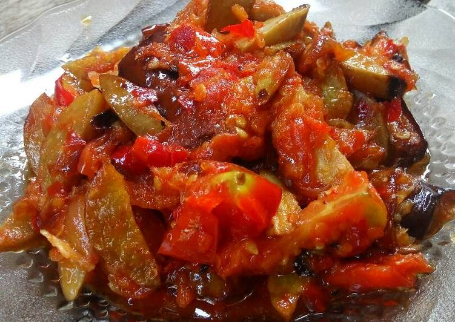

"Jengkol Terong Balado" merupakan salah satu masakan khas orang Indonesia yang sudah mendunia akan kenikmatannya. Selain memiliki bentuk yang menggugah selera, proses pembuatannya juga sangatlah simpel dan mudah. Makanan ini juga memiliki berbagai manfaat bagi tubuh kita seperti: sumber protein, penangkal radikal bebas, mencegah tulang rapuh dan penyakit jantung, merampingkan perut, mencegah kanker, mengendalikan kadar kolesterol kita dan masih banyak manfaat lainnya.